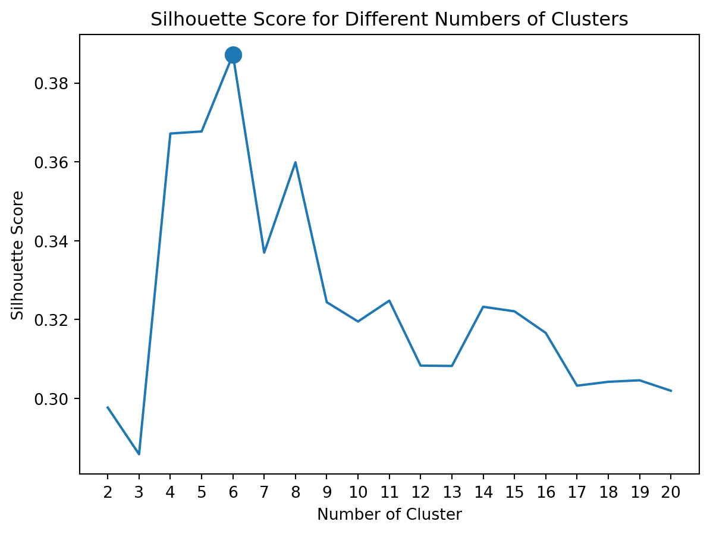
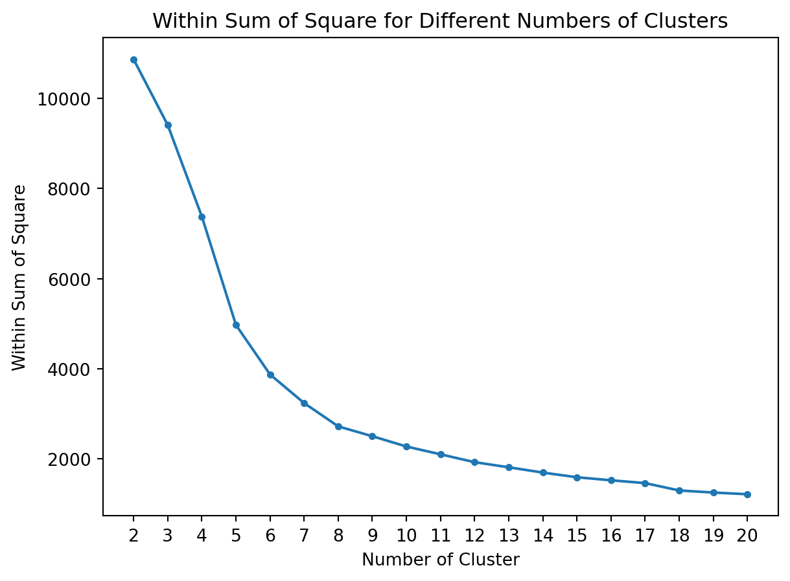

The main purpose of this project is to learn how to identify different customer segments in the retail industry using K-Means clustering method.
Library
The following are the required packages that will be used throughout the project. It consists of packages for data wrangling, clustering, and data visualization.
Code
# data wranglingimport pandas as pdimport numpy as np# visualizationimport matplotlib.pyplot as plt# clusteringfrom sklearn.cluster import KMeansfrom sklearn.preprocessing import StandardScalerfrom sklearn.metrics import silhouette_score# no limit to the number of columns that will be displayedpd.set_option("display.max_columns", None)
Data understanding
The data is acquired from UC Irvine Machine Learning Repository. This is a transnational data that contains all the transactions occurring between 01/12/2010 and 09/12/2011 for a UK-based and registered non-store online retail. The company mainly sells unique all-occasion gifts. Many customers of the company are wholesalers. This project will segment customers based on their transactions.
InvoiceNo: a 6-digit integral number uniquely assigned to each transaction. If this code starts with letter C, it indicates a cancellation.
StockCode: a 5-digit integral number uniquely assigned to each distinct product.
Description: product name.
Quantity: the quantities of each product (item) per transaction.
InvoiceDate: the day and time when each transaction was generated.
UnitPrice: product price per unit.
CustomerID: a 5-digit integral number uniquely assigned to each customer.
Country: the name of the country where each customer resides.
Initially, convert the data type of the CustomerID column to object to accurately reflect the nature data type of this column:
Code
# convert each cell to string, preserving NaN values# NaN values remain as NaN after conversion # and are still considered as null valuesdf["CustomerID"] = df["CustomerID"].apply(lambda x: str(int(x)) ifnot pd.isnull(x) else np.nan)
Describe the data
Code
df.describe(include=["object"])
InvoiceNo
StockCode
Description
CustomerID
Country
count
541909
541909
540455
406829
541909
unique
25900
4070
4223
4372
38
top
573585
85123A
WHITE HANGING HEART T-LIGHT HOLDER
17841
United Kingdom
freq
1114
2313
2369
7983
495478
Code
df.describe(include=["number"])
Quantity
UnitPrice
count
541909.000000
541909.000000
mean
9.552250
4.611114
std
218.081158
96.759853
min
-80995.000000
-11062.060000
25%
1.000000
1.250000
50%
3.000000
2.080000
75%
10.000000
4.130000
max
80995.000000
38970.000000
Note that both the Quantity and UnitPrice columns contain negative values as their minimums. These negative values neither generate revenue for the company nor are considered valid within the context of this project.
Data preparation
Data cleansing
Filter the data to include only rows where both the Quantity and UnitPrice columns contain values greater than zero:
Transactions with an InvoiceNo starting with C are absent due to the absence of negative values in the Quantity column. These negative values were eliminated from the data, which underwent filtering to include only entries where Quantity and UnitPrice were greater than zero.
Generate a new column to retain the date from the InvoiceDate field and another column to compute Sales derived from Quantity and UnitPrice:
n_rows, n_columns = get_n_row_col(df)print(f"The cleaned data now consists of {n_rows} rows and {n_columns} columns.")
The cleaned data now consists of 397,884 rows and 10 columns.
LRFMP model
The model builds upon the traditional RFM model by incorporating two new variables: Length and Periodicity. Here are the definitions of each variable:
Length: represents the time interval, measured in days, between a customer’s first and last visits. It serves as an indicator of customer loyalty, with higher values indicating greater loyalty.
Recency: denotes the number of days between a customer’s last visit and the end of the observation period. A lower Recency value implies recent transaction activity.
Frequency: refers to the total number of visits made by a customer during the observation period. Higher frequencies are indicative of increased customer loyalty.
Monetary: reflects the average amount of money spent per visit by the customer during the observation period, highlighting their contribution to the company’s revenue.
Periodicity: represents the average time between transactions for a customer.
To start, compute the Length, Recency, Frequency, and Monetary metrics for each CustomerID:
Then, calculate the Periodicity metric for each CustomerID:
Code
# duplicate values must be dropped to eliminate instances # where a customer makes multiple transactions on the same datedf_agg_2 = df[["CustomerID", "InvoiceDate_date"]].drop_duplicates()# sort the data by "CustomerID" and "InvoiceDate_date" before calculating the "LagDate"df_agg_2 = df_agg_2.sort_values(["CustomerID", "InvoiceDate_date"])# shift each value within the group down by 1 "row" from its original position# -> this creates a new column in the DataFrame, # where each value is the purchase date of the corresponding customer in the previous purchasedf_agg_2["LagDate"] = df.groupby("CustomerID")["InvoiceDate_date"].shift(1)df_agg_2 = df_agg_2.dropna(subset=["LagDate"])df_agg_2["IntervalDay"] = (df_agg_2["InvoiceDate_date"] - df_agg_2["LagDate"]).dt.daysdf_agg_2 = df_agg_2.groupby("CustomerID").agg(Periodicity=("IntervalDay", "median")).reset_index()df_agg_2.head()
CustomerID
Periodicity
0
12347
58.5
1
12348
70.0
2
12352
14.5
3
12356
151.5
4
12358
149.0
Finally, combine both dataframe to gain the complete LRFM values for each CustomerID:
NaN values in the Periodicity column suggest that the customer has only made a single transaction with the company (Frequency = 1) and has not returned for subsequent purchases.
From a marketing perspective, separate campaigns can be designed specifically for these customers to encourage them to make a second purchase:
Code
null_periodicity ="{:,.0f}".format(len(df_final[df_final["Periodicity"].isnull()]))print(f"There are {null_periodicity} customers who have only made a single transaction with the company.")
There are 1,548 customers who have only made a single transaction with the company.
Exclude these customers from further analysis as they do not have sufficient transaction history data:
Clustering algorithm will calculate the distance between data point, commonly using the euclidean distance:
\[
distance(a, b) = \sqrt {\Sigma_{i=1}^n (a_i - b_i)^2}
\]
Directly feeding the data into the clustering algorithm will result in the Monetary variable having a more significant influence on distance calculations compared to the remaining variables, given its wider range of values. Therefore, for optimal results, it’s essential that all variables are on the same scale. To address this issue, the data should be scaled using the standard normal distribution:
Commence customer segmentation using the K-Means algorithm.
Initially, determine the optimal number of clusters, which can be assessed through various metrics. The most common metric is the within sum of squares (WSS), representing the distance between each data point and its respective cluster centroid. Another useful metric is the silhouette score.
The Silhouette Score evaluates the efficacy of a clustering algorithm by considering both the compactness of individual clusters (intra-cluster distance) and the separation between clusters (inter-cluster distance), resulting in an overall score that gauges the algorithm’s performance.
The Silhouette Score ranges from -1 to 1, with the following interpretations:
silhouette score = 1: data points are perfectly assigned to clusters, and clusters are clearly distinguishable.
silhouette score = 0: clusters overlap.
silhouette score = -1: data points are incorrectly assigned to clusters.
Below are the WSS and silhouette scores for different numbers of clusters in this project:
Code
sil_score = np.zeros(20)wss_score = np.zeros(20)for i inrange(1, 20): x = i +1# cluster the data clust_temp = KMeans(n_clusters=x, random_state=15, n_init="auto").fit(df_scaled) labels = clust_temp.labels_# calculate Silhouette Score sil_score[i] = silhouette_score(df_scaled, labels, metric="euclidean")# calculate Within Sum of Square wss_score[i] = clust_temp.inertia_trial_clust = pd.DataFrame({"n_cluster" : pd.to_numeric(list(range(1, 20))) +1,"silhouette_score" : sil_score[1:],"wss_score" : wss_score[1:]})# highlight optimal number of cluster based on highest "silhouette_score"p_1 = trial_clust[trial_clust["silhouette_score"] == trial_clust["silhouette_score"].max()]p_1
n_cluster
silhouette_score
wss_score
4
6
0.38719
3874.798088
Below is the visualization of the Silhouette Score results. According to the analysis, the optimal number of clusters is 6, as it yields the highest silhouette score.
Code
plt.plot(trial_clust["n_cluster"].astype("str"), trial_clust["silhouette_score"])plt.scatter(p_1["n_cluster"].astype("str"), p_1["silhouette_score"], s=100)plt.title("Silhouette Score for Different Numbers of Clusters")plt.xlabel("Number of Cluster") plt.ylabel("Silhouette Score")plt.show()plt.close()

The determination of the optimal number of clusters using WSS is somewhat nuanced, as there is no definitive value to select. Instead, the “elbow” or the point must be identified where the decrease in WSS is no longer significant.
Below is the visualization of the WSS results. The absence of a clear elbow suggests that the curve does not exhibit a sharp decline. A cluster count between 6 and 8 might represent the optimal number of clusters.
Code
plt.plot(trial_clust["n_cluster"].astype("str"), trial_clust["wss_score"])plt.scatter(trial_clust["n_cluster"].astype("str"), trial_clust["wss_score"], s=10)plt.title("Within Sum of Square for Different Numbers of Clusters")plt.xlabel("Number of Cluster") plt.ylabel("Within Sum of Square")plt.show()plt.close()

Clustering
Determining the optimal number of clusters can be challenging, especially in datasets with numerous variables and dimensions. This decision is further complicated by factors such as domain expertise and the business implications of the clustering outcome. Rather than focusing solely on a predetermined cluster count, it’s beneficial to prioritize the quality of the cluster results. In this particular scenario, opting for cluster = 4 provides a simpler and more interpretable outcome, avoiding the complexity associated with a larger number of clusters. Additionally, this choice facilitates the effective grouping of outlier or high/low-performing customers, leading to clearer insights.
After assigning a cluster segment to each customer, the next step involves profiling the different segments and identifying the variations between them. This can be achieved by obtaining the centroid of the mean of each variable from each cluster, allowing for the profiling of the members within each cluster.
Cluster 0 represents a significant portion of the customer base, comprising 34.05% of all customers. This cluster stands out for its exceptional loyalty, as evidenced by the highest average length of relationship (LengthMean), frequency of visits (FrequencyMean), and recent transaction activity, indicated by the lowest average recency (RecencyMean). Moreover, customers in this cluster contribute the most revenue to the company, boasting the highest average monetary spend per visit (MonetaryMean). These customers transact with the company on average once every 43 days, which is the shortest interval among all four clusters. Given their substantial value, it is imperative for the company to prioritize retention efforts aimed at this segment.
Cluster 1
Cluster 1 comprises the largest number of customers, representing 35.41% of the total customer base. While the loyalty indicators within this cluster are not exceptionally high, the revenue generated is substantial, trailing Cluster 0 by only approximately 10 units. This underscores the significance of these customers in contributing revenue to the company. Implementing targeted strategies to enhance customer loyalty within this segment is crucial for the company’s continued success.
Cluster 2
Cluster 2 comprises the smallest customer base, making up 13.41% of the total customer count. Despite its smaller size, this cluster significantly contributes to the company’s revenue, as indicated by (MonetaryMean = 402.44). However, when considering metrics such as LengthMean, RecencyMean, and FrequencyMean, it becomes evident that this customer segment lacks loyalty. Although the PeriodicityMean suggests that these customers tend to make purchases roughly every two months, their frequency of visits (FrequencyMean = 2.66) remains relatively low. While this cluster represents a walk-in customer base, there exists an opportunity for the company to implement targeted strategies aimed at enhancing customer retention and attracting more frequent purchases, particularly given the substantial revenue generated by this customer segment.
Cluster 3
Cluster 3 represents a modest portion of the customer base, comprising approximately 17.13% of the total number of customers. Metrics such as LengthMean, RecencyMean, and FrequencyMean suggest that loyalty is lacking within this cluster. Furthermore, with the lowest MonetaryMean and the highest PeriodicityMean among the four clusters, it is evident that the customers in this cluster do not contribute significantly to the company’s value.